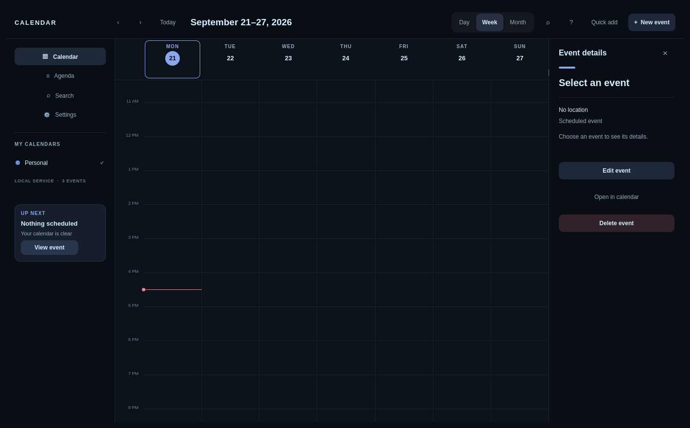

Your time, without leaving Omarchy.
A beautiful open-source calendar built with Qt and QML. Plan your day, manage recurring events, answer invitations, join meetings, and keep working when the network disappears.

Calendar work stays close.
The interface follows your active Omarchy palette and typography while a local service keeps events, edits, reminders, and sync state durable.
Plan every shape of time
Day, week, month, agenda, all-day and multi-day events, timezones, recurring series, and fast search.
Edit with confidence
Create, move, resize, delete, undo, invite guests, RSVP, and recover conflicts through a durable offline queue.
Built for meetings
Create Google Meet links and open Meet, Zoom, Teams, phone, and SIP details directly from the inspector.
Omarchy by design
Live theme updates, compact and comfortable density, keyboard operation, visible focus, and responsive layouts.
Local-first storage
Calendar data lives in SQLite on your computer. Refresh tokens stay in your desktop Secret Service.
Open and inspectable
MIT-licensed source, redacted diagnostics, versioned DBus contracts, deterministic tests, and an Arch package.
Google data goes from Google to your computer.
Omarchy Calendar has no developer-operated sync server, advertising, analytics, or sale of user data.